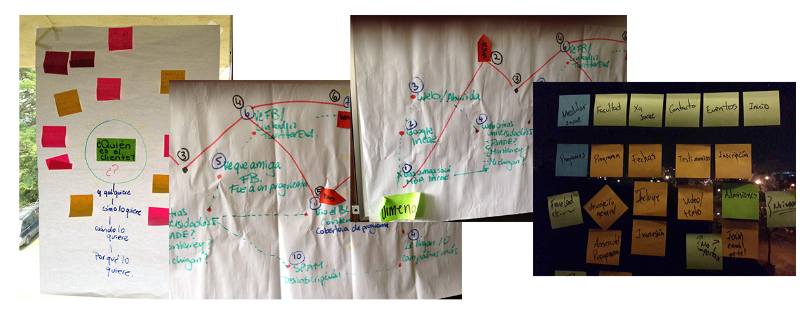

Executive Education - INCAE Business School
INCAE Business School needed to have a redesign for their Executive Education programs, at the moment, all the programs have a different website and different information. My job was to create a template that would be as flexible as INCAE needed it, but also providing structure and consistency.

What I did
I interviewed stakeholders to understand the company's programs, how they are designed, how do the students register now, etc. and to gather data on what is the most important information their potential students will look for on a program.
This information gave me a clearer panorama of what I would be doing and also a clear understanding of the programs and the flexibility INCAE needed to have since they can be modules of other programs, given at a different country, different date or different rate depending of the location, date, professors, etc.
To create a template and hierarchize the information needed I reviewed the Personas INCAE had for this users, and compared all the executive programs information available. With this information I was able to prioritize the content the user needed.
With these information, Alberto (from Manatí) was able to build the prototype, meanwhile I was at Interaction South America, when I came back I continued with the prototype and finished the prototype.
Key tools and deliverables
- Stakeholder interviews
- Content audit
- Sketching
- Prototyping
Results
This project is still under development, but when we gave the demo to the stakeholders they were thrilled on how easy is to create a new program and how to update data on existing executive programs.